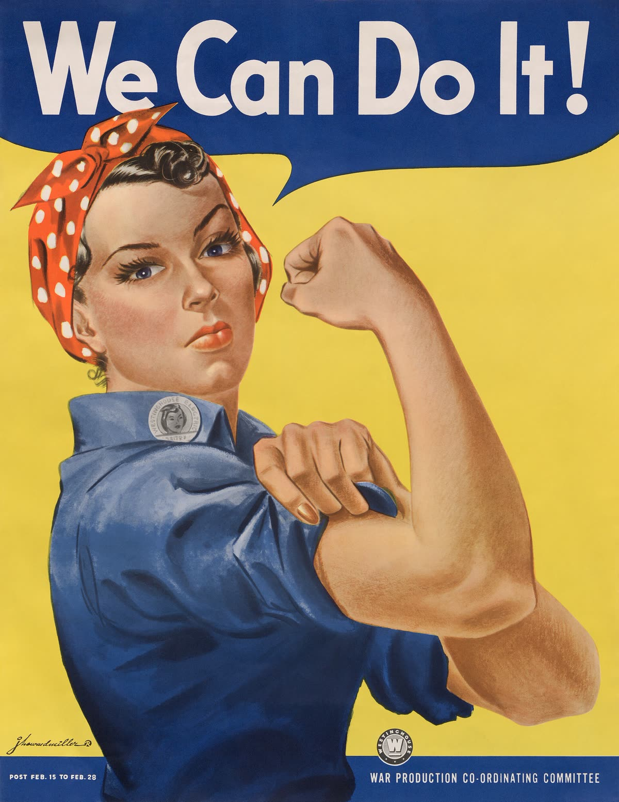
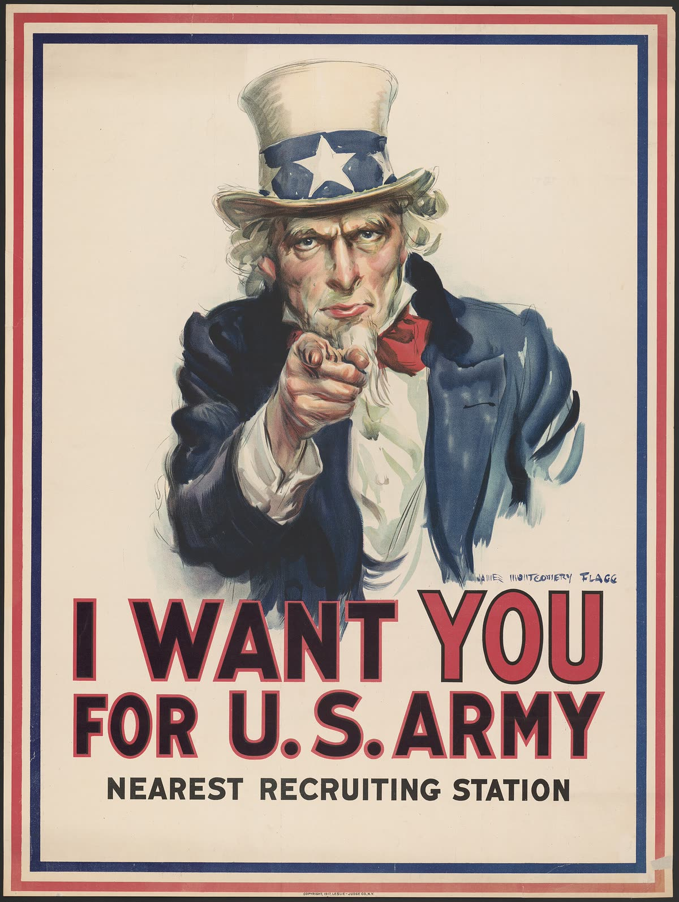
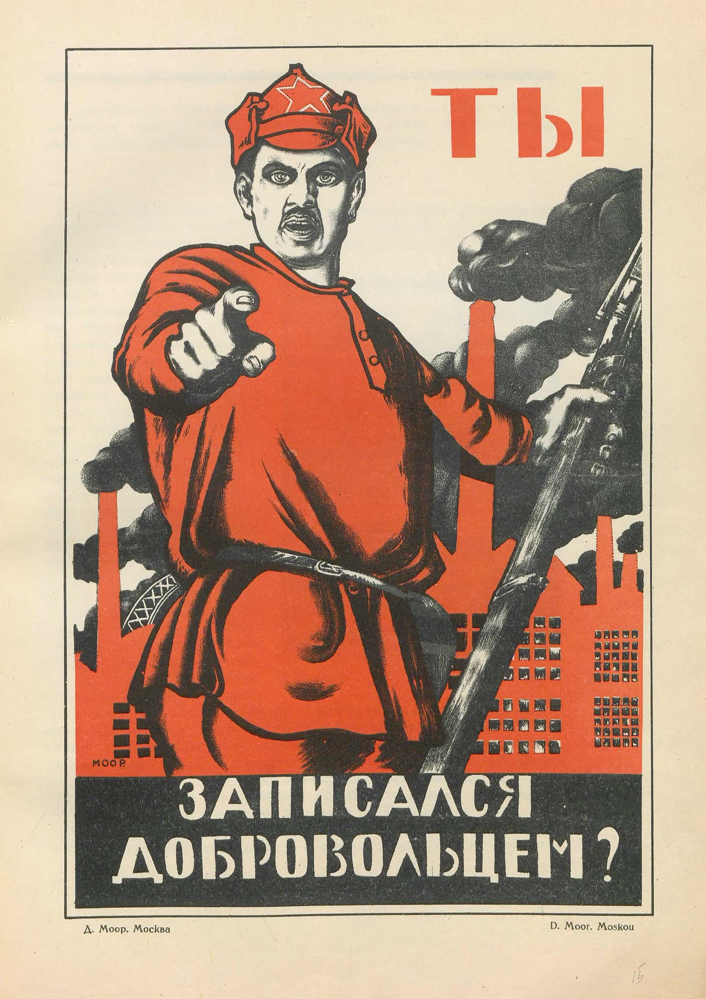
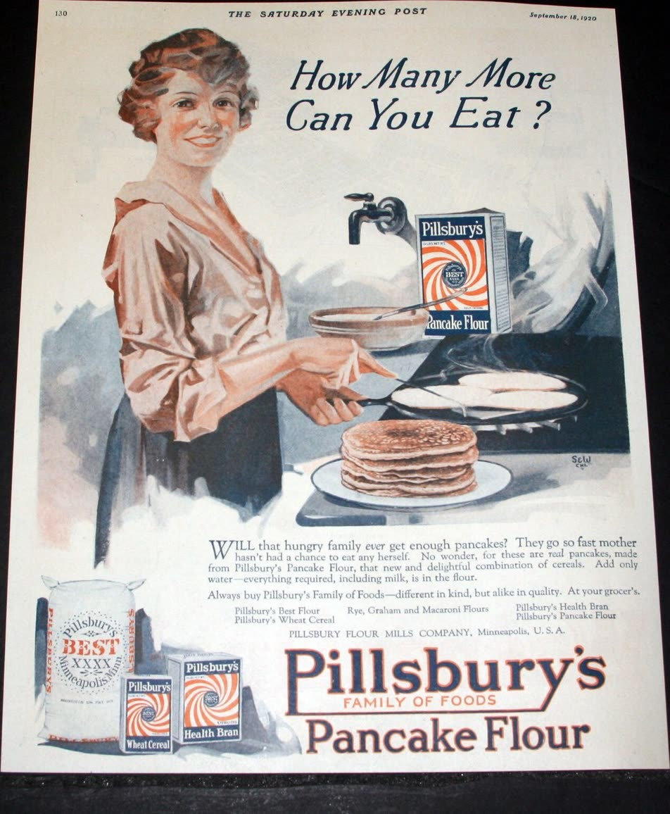
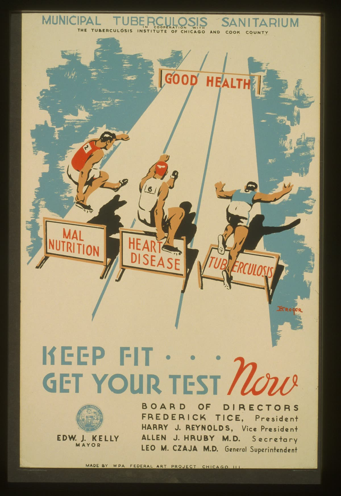
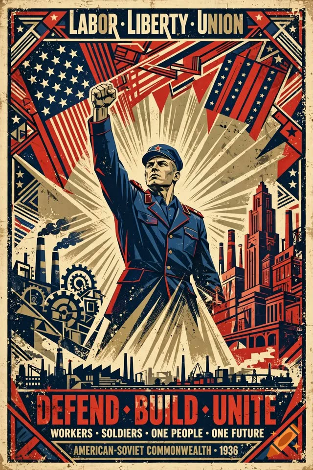

United Farm Workers, California, años sesenta

«¡Viva la huelga!»
Lo pagó el sindicato de campesinos. ¿Qué quiere que haga la gente que lo ve?
El taller de carteles · Día 16 / 53
Diez días. Una causa tuya. Siete palabras y tres segundos para convencer a alguien.
Una noticia informa y deja que el lector decida. Un cartel no: quiere que hagas algo, y tiene tres segundos para lograrlo.
Primero vamos a desarmar ocho carteles de verdad. Después haces el tuyo, sobre algo en lo que crees, y se cuelga donde lo vea gente que no conoces.

«¡Nosotros podemos hacerlo!»
Misma persona dibujada fuerte, misma palabra «nosotros», peticiones contrarias.
Lee la página 2 y subraya la diferencia entre información, anuncio y propaganda. Después contesta las cuatro preguntas para los dos carteles.
Con nombre se ven. Sin nombre funcionan.

«Te quiero a TI para el ejército de Estados Unidos»

En ruso: «Ты записался добровольцем?»
Si los dos usan exactamente el mismo truco, el truco no te dice quién tenía la razón.
Un cartel de vacunas y un cartel de guerra usan las mismas diez. Lo que cambia es para qué, y quién gana.
Llena la tabla de las diez técnicas con dónde has visto cada una. Después marca las técnicas de los dos carteles del dedo y contesta las tres preguntas de abajo.
Ochenta minutos: dos carteles más, uno falso, y tu causa.


Los dos te dan una orden y los dos te enseñan gente sana y feliz.
El cartel de la tuberculosis te manda a hacerte una prueba que existe, en un lugar que existe.
El anuncio no te da ningún número: te da una señora sonriendo y una torre de panqueques.

«Trabajo · Libertad · Unión» / «Defiende · Construye · Únete»
La que pase las cinco es la que vas a dibujar durante dos semanas. Escoge una que te importe.
Compara el anuncio con el cartel de salud, búscale las costuras al cartel falso, y después llena los seis recuadros de ideas, pasa tus dos mejores por la prueba y haz tres bocetos.
Nadie imprime sin permiso.
Tu causa en una oración, por qué te importa a ti, a quién le hablas, qué quieres que haga esa persona, un dato, y el símbolo que podrías usar.
Te la regreso aprobada, aprobada con cambios, o «busca otra causa». Eso último no es castigo: pasa en cualquier taller.
Llena la propuesta completa y escoge a tu público: una persona real, no «toda la escuela».
Siete palabras o menos. Casi siempre, un mandato.
| a un compañero | a un adulto | a todos | |
|---|---|---|---|
| unirse | ¡Únete! | ¡Únase! | ¡Unámonos! |
| luchar | ¡Lucha! | ¡Luche! | ¡Luchemos! |
| cuidar | ¡Cuídalo! | ¡Cuídelo! | ¡Cuidémoslo! |
| apagar | ¡Apágala! | ¡Apáguela! | ¡Apaguémosla! |
| firmar | ¡Firma! | ¡Firme! | ¡Firmemos! |
| preguntar | ¡Pregunta! | ¡Pregunte! | ¡Preguntemos! |
| callarse | ¡No te calles! | ¡No se calle! | ¡No nos callemos! |
cuida → cuídalo · apaga → apágala · une → únete · firma → fírmala
Dilo en voz alta: el golpe de la voz no se movió. La palabra creció, y por eso ahora el acento se escribe.
Cinco eslóganes para tu causa. Después encierra el mejor y cópialo con sus acentos y sus signos.
Un símbolo. Un foco. Tres segundos. Y a veces, un chiste.

«Sister Boom Boom para supervisora»
El humor es la décima técnica de la lista, y es la que entra donde ya nadie te quiere escuchar.
También tiene un precio: la gente se acuerda del chiste y a veces no de la causa.
Contesta las tres preguntas del cartel de 1982, escoge tu símbolo, practica las letras y haz las tres composiciones.
Ochenta minutos y un lápiz. El cartel completo.
A lápiz, para poder borrar. A la media hora paramos todos y alguien más lo ve.
Dibuja el cartel completo en la página 12 y contesta las cuatro casillas de abajo.
Nadie se para a estudiar un cartel.
«Hacerlo mejor» no es un cambio. «Poner el eslogan arriba y el foco más grande» sí lo es.
Haz la prueba con dos personas distintas si alcanza el tiempo. Llena la tabla y escribe tus tres cambios.
La versión final. Con color.
La versión final en la página 14, con los tres cambios que escribiste ayer.
Hoy explicas lo que hiciste, y haces el cartel del otro lado.
Alguien no está de acuerdo contigo y tiene dinero para imprimir. Con las mismas diez técnicas, ¿qué cartel haría contra el tuyo?
Escribe el eslogan que de verdad golpearía tu causa — no uno débil para quedar bien.
Escribe tu defensa, haz el contracartel, contesta la reflexión y califícate con la tabla. Después colgamos los carteles.
Alguien que no conoces va a pasar por el pasillo, lo va a ver tres segundos y va a pensar en tu causa. Eso es todo el oficio.